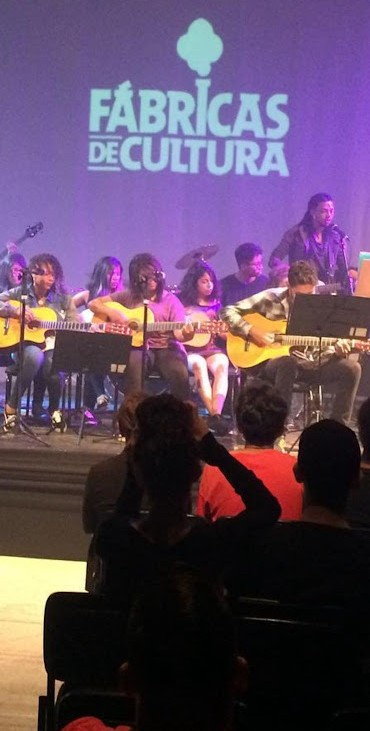
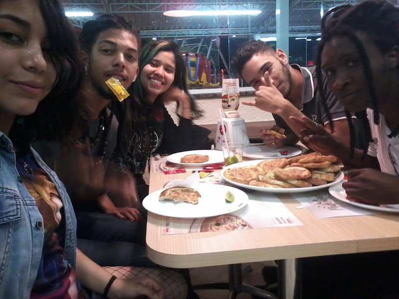

Homenagens
Esta página reúne mensagens, lembranças e manifestações de carinho dedicadas a João Delfante e Thalita Rodrigues.
Cada relato preserva um pouco da presença, da história e do amor deixado por eles na vida de amigos, familiares e pessoas que tiveram o privilégio de conhecê-los.
Mirele Celeste
Amiga da Thalita


Aqui foi a primeira vez que saí de casa com amigos aos 14 anos. A Thalita frequentava bastante a minha casa e meus pais gostavam bastante dela, tanto que eu só podia sair com ela kkkk.
Conheci ela na aula de violão em 2018.
Essa foto foi na pandemia, eu tinha 16 anos e, mais uma vez, eu só podia sair de casa com ela presente.
Uma memória que fica guardada até hoje foi quando eu tinha acabado de abandonar o tratamento que estava fazendo no CAPS, tive uma recaída e estava planejando meu suicídio. A Thalita percebeu os sinais e, na mesma madrugada, ouvi alguém me gritando na janela do meu quarto. Quando olhei, lá estava ela e o Jeferson com pizza e refrigerante.
Eu me senti tão acolhida. Ela sempre fazia de tudo para me mostrar a beleza da vida e que vale a pena continuar, independente da fase em que nos encontramos.
Mirele Celeste — Amiga da Thalita
Jeff
Amigo da Thalita
Thalita era uma amiga incrível. Ela sabia como deixar leve qualquer ambiente com as suas loucuras. Ela não era perfeita, tinha seus problemas pessoais também, isso é óbvio, mas era raro ver ela reclamando ou lembrando dos próprios problemas. Em vez disso, ela preferia se descontrair, brincar, ser sarcástica e estar sempre com um sorriso no rosto.
Ela não gostava de ver ninguém para baixo, por isso atraía pessoas de todos os tipos para perto de si. Não tinha como não amar o jeito dela de ver o mundo.
Foi triste ver ela partindo, pois ela foi um pilar essencial na minha vida. Me ensinou muitas coisas, muitas lições sobre a vida, e ela já me deu motivo para continuar.
A última vez que falei com ela, ela estava tão feliz. Ela deixou claro para mim que estava vivendo um dos melhores momentos da vida dela. Então eu sei que Deus tem seus motivos para levar alguém tão provida de amor, vida e coragem.
Thalita, obrigado por ter existido em nossas vidas!
Jeff — Amigo da Thalita
Larissa
Amiga do João
Algumas das minhas lembranças favoritas com você são dessas coisas simples que aconteceram sem planejamento.
Teve aquela noite em que você foi lá para casa e jantou purê com macarrão. A gente ficou brincando e se zoando o tempo todo, daqueles momentos leves que acabam ficando na memória.
Também teve o dia em que você estava esperando o Uber. Você tirou foto com o Lincoln enquanto aguardava aparecer um carro. Eu estava deitada, a gente conversando, e você todo descabelado porque estava quase dormindo momentos antes. Até hoje acho engraçado lembrar disso.
Lembro também do dia em que coloquei o DIU. Depois, ficamos deitados, comendo brigadeiro e conversando. Eu falei que sua mãe tinha dito que você era meio rabugento. Você respondeu que não era e abriu um sorriso tão bonito que eu precisei tirar uma foto. Ainda brinquei que ia mostrar para ela como você ficava sorridente quando estava lá em casa.
Teve aquele dia em que você simplesmente dormiu o dia inteiro. Eu te deixei descansando enquanto fazia minhas coisas, e quando você acordou falei que dormia igual um anjinho. Foi uma cena tão tranquila e carinhosa que ficou guardada comigo.
E também aquele dia frio em que você foi me ver. Ficamos enroladinhos para nos aquecer e, olhando para nós dois, achei que estávamos tão bonitinhos juntos que tirei uma foto para guardar aquele momento.
São lembranças simples, mas são justamente essas pequenas cenas do dia a dia, as conversas, as brincadeiras, os sorrisos, o jeito que você dormia e os momentos de carinho que acabam se tornando algumas das memórias mais especiais. ❤️
Larissa — Amiga do João